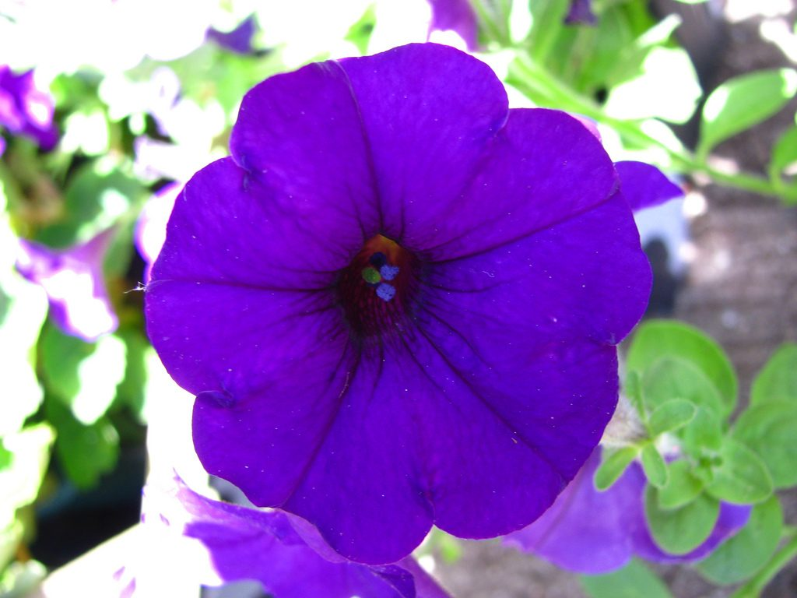

El género Petunia, llamado comúnmente también petunia, comprende 23 especies1 pertenecientes a la familia de las Solanáceas nativas de Sudamérica. La mayoría de las variedades cultivadas son híbridos de Petunia × hybrida, llamada también P. atkinsiana
Son plantas perennes tratadas como anuales de escasa estatura, entre 15 a 60 cm dependiendo de la especie. Las hojas se disponen de forma alterna u opuesta, alargadas o redondeadas y de bordes enteros. Están recubiertas por una vellosidad algo pegajosa. Las flores son solitarias y axilares; surgen en los ápices de las ramas. El cáliz es tubular, con corola en forma de trompeta y muy pedunculadas.2 La floración es abundante, sin parar desde principios de primavera hasta finales de otoño. Pueden tener cualquier color excepto el naranja y existen variedades bicolores. Aunque son clasificadas como inodoras toda la planta exhala un agradable aroma.
Plantación y Mantenimiento de las petunias
El periodo de floración de las petunias se extiende desde mayo hasta octubre. Y como decíamos, su floración es de lo más abundante. Existen múltiples variedades de petunias y muchos híbridos, pero todos ellos tienen la misma generosa florescencia.
Las petunias son plantas que requieren de muchas horas de sol. A cambio éstas nos ofrecerán mucho colorido desde la primavera hasta bien entrado el otoño. Para un cultivo exitoso de petunia debes ser capaz de proporcionarle todo ese sol que necesitan en un lugar protegido del viento.
La plantación de las petunias se realiza de febrero a marzo, tras el riesgo de las heladas, ya que éstas son poco resistentes a los fríos elevados. Si en tu zona hace frío en esos meses, puedes plantarlas en macetas en el interior y trasplantarlas al exterior a mediados de mayo.
No obstante algunas especies de petunias soportan pequeñas heladas (de -6 a -9 grados), sobre todo las petunias colgantes. Para conservarlas de un año a otro, córtalas y colócalas al abrigo en un lugar sin calor durante el invierno.
Planta las petunias con una separación de 20-30 cm en todas las direcciones. Para provocar la ramificación de los tallos no te olvides de pellizcarlos.
Cuidados y mantenimiento de las petunias
Elimina las flores marchitas de las petunias conforme aparezcan. A finales de verano puedes aprovechar para cortar algunos tallos. Las nuevas ramificaciones aportarán nuevas flores. Esta planta es muy “glotona”, así que es conveniente que le apliques abono para plantas floridas de junio a octubre.
Los riegos deben ser regulares e intensos durante los días más calurosos del verano, pero nunca excesivos, ya que corres el riesgo de eliminar la acción de los fertilizantes.

CONTACTOS
Vivero Florisanto
Telefonos: 3135058066 - 3126688884
Email:vivero-florisanto@hotmail.com
Dirección: Calle 29 # 38-70 Via Planeta Rica K2